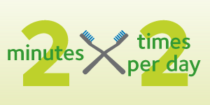

Brushing and oral health
Dental Advise by Dr. Smile | 8 April 2020

Brushing your teeth is an important part of your dental care routine. For a healthy mouth and smile the ADA recommends you:
- Brush your teeth twice a day with a soft-bristled brush. The size and shape of your brush should fit your mouth allowing you to reach all areas easily.
- Replace your toothbrush every three or four months, or sooner if the bristles are frayed. A worn toothbrush won’t do a good job of cleaning your teeth.
- Make sure to use an ADA-accepted fluoride toothpaste.
The proper brushing technique is to:
- Place your toothbrush at a 45-degree angle to the gums.
- Gently move the brush back and forth in short (tooth-wide) strokes.
- Brush the outer surfaces, the inner surfaces, and the chewing surfaces of the teeth.
- To clean the inside surfaces of the front teeth, tilt the brush vertically and make several up-and-down strokes.
Check out this handy infographic on brushing!
Of course, brushing your teeth is only a part of a complete dental care routine. You should also make sure to:
- Clean between teeth daily once a day. Tooth decay-causing bacteria still linger between teeth where toothbrush bristles can’t reach. This helps remove plaque and food particles from between the teeth and under the gum line.
- Eat a balanced diet that limits sugary beverages and snacks.
- Brush the outer surfaces, the inner surfaces, and the chewing surfaces of the teeth.
- See your dentist regularly for prevention and treatment of oral disease.
Click here to download the how to brush PDF.